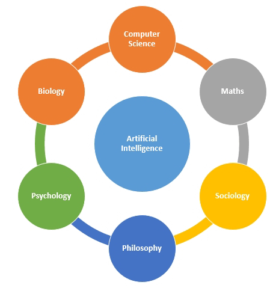

AI bases page
links:
Artificial intelligence uses machine learning to mimic human intelligence. The computer has to learn how to respond to certain actions,
so it uses algorithms and historical data to create something called a propensity model.
Propensity models will then start making predictions (like scoring leads or something).
AI can do much more than this, but those are common uses and functionality for marketing.
And while it might seem like the machines are ready to rise up and take over, humans are still needed to do much of the work.
Mainly, we use AI to save us time — adding people to email automation and allowing AI to do much of the work while we work on other tasks.
Popular misconceptions tend to place AI on an island with robots and self-driving cars. However, this approach fails to recognize artificial intelligence’s major practical application; processing the vast amounts of data generated daily.
Artificial Intelligence mainly works on three techniques. They are Symbolic AI, Data-Driven and Future development.
Symbolic artificial intelligent covers Expert systems, Fuzzy logic and Early principle of AI. An expert system,
the computer is given a problem and few practices were carried out to check its logical problem-solving skills.
They have given a set of rules and they will strictly follow the best in a constrained environment. In fuzzy logic.
it is mostly true or false method and applied in control systems.
